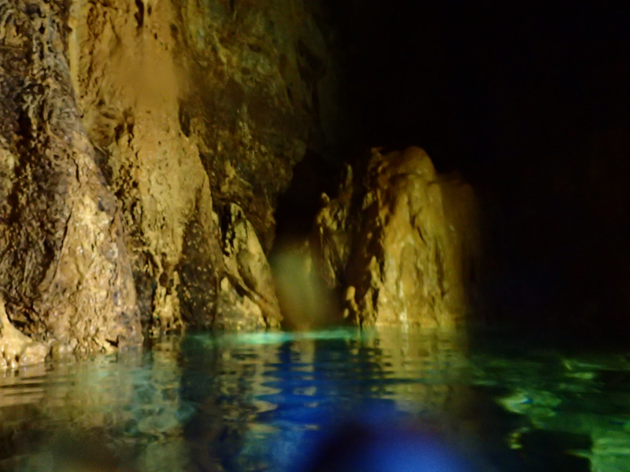
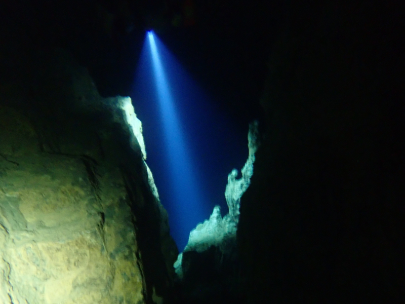
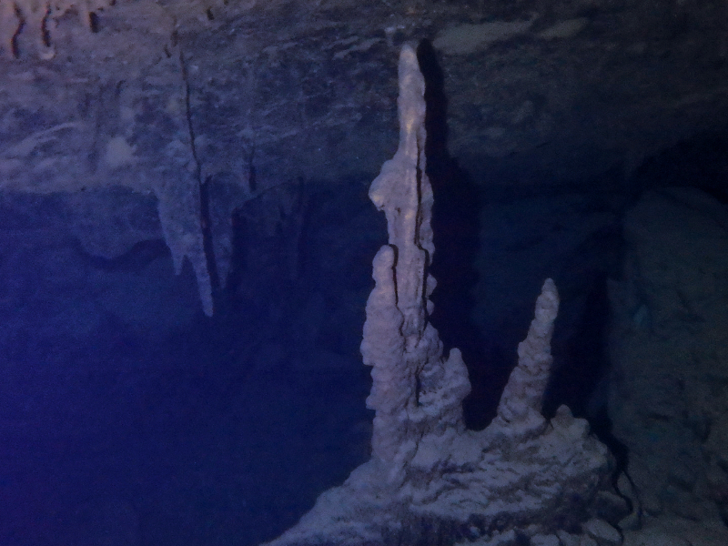
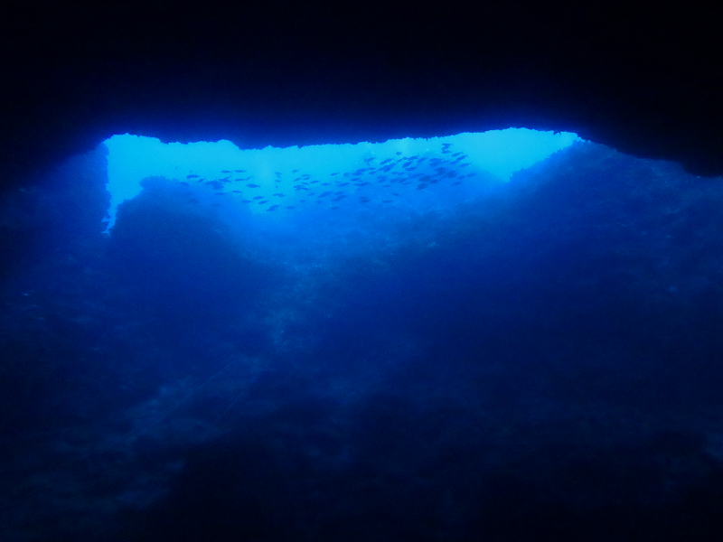
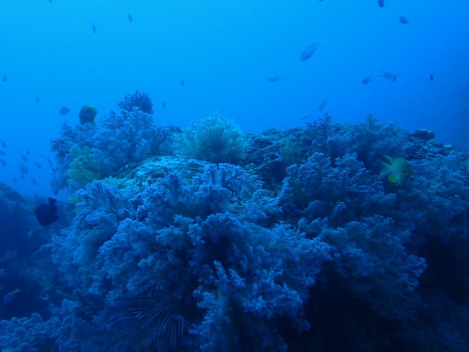
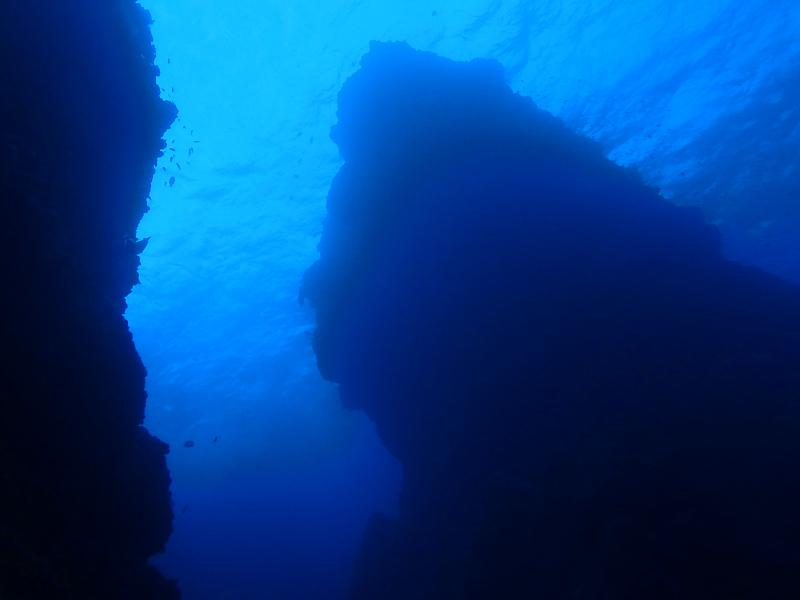
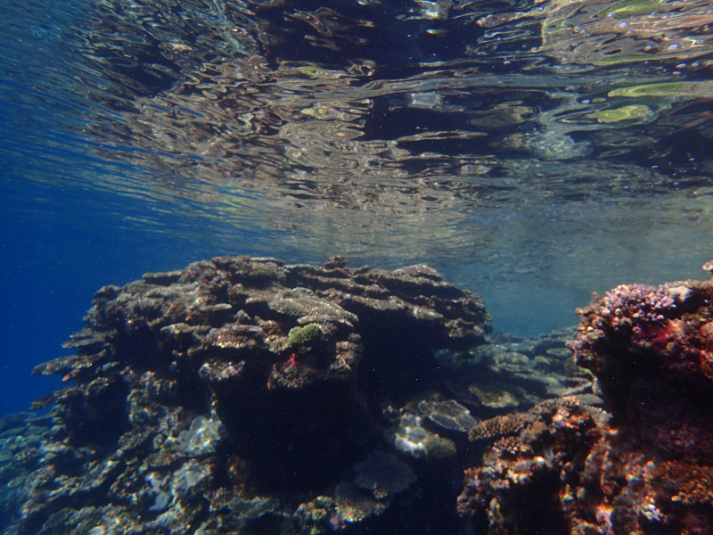
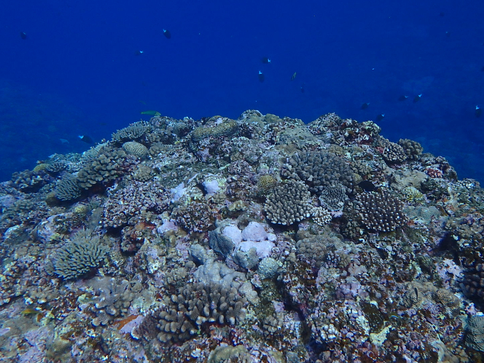

参加時に、当ショップスタッフが撮影させて頂いた写真(陸上・水中問わず)を、恩納(沖縄)での思い出となるよう、無償で提供させて頂いています。ご自由に、ご自身や、ご友人、またはSNS等で、良き旅の思い出となるよう、ご活用ください。
辺戸岬

A dive trip to Cape Hedo starts with a long drive to the very north of the island along Route 58, which, with its stunning beauty, eclipses those winding roads by the sea in luxury car commercials. Once you enter the water, you are immediately stunned by the beauty of the corals and the vertical drop-offs which lead into the abyss deep below. The marine life is equally spectacular and, as one boat captain puts it, "here you are a part of the food chain". Possibly the main attraction of the area is the Hedo dome, which is an underwater cave that gradually gets shallower the further you penetrate, until you can eventually surface in an air dome in complete darkness.
Please scroll down for details and prices. Towards the bottom of this page you can also find detailed descriptions of individual dive sites located around Cape Hedo, such as the Hedo Dome, Hedo Pinnacles, or Hedo Canyon.




詳細な情報
適切なレベル：中級者のダイバー、またアドバンス保持者向けです。
最低宿泊人数：1 (provided the boat is going out that day)
ダイビングの最小回数：2
船の、出発時間は8：30、11：00、13：30で、1ダイブ事に港に戻ります。
辺戸岬の近くの港を使用します。We offer free pick-up service from hotels in Onna, Chatan and Nago. Pick-ups from other locations are also possible upon request. Please inquire.
船は、～5分、～20分程度しか走りません。
This dive area is particularly popular with drift divers.
トイレ・洗面は港で可能です。
We conduct many of our scuba diving courses in this dive area.




料⾦表
ファンダイビング（ボート）
- 2 本 - 18000 円
- 3 本 - 21000 円
† Gear rental not included. You can rent a full set of gear for ¥ 4000/day and a partial set at a reduced rate. If you do fun dives with us on multiple days, gear rental is free from the third day onward.
‡ The prices above are for a single day of diving.
§ Drinks and snacks are provided, however lunch is not included. We usually get food for lunch at one of the restaurants or convenience stores close to the port. Prices range between ¥ 400 and ¥ 1000 depending on your order.
While you are browsing...
We encourage you to also check out some of the other dive areas that we visit, especially if you are planning to dive in Okinawa on multiple days. Our suggestions include:
You can also return to the complete list of all diving locations in Okinawa we operate at.

お問い合わせはお気軽に